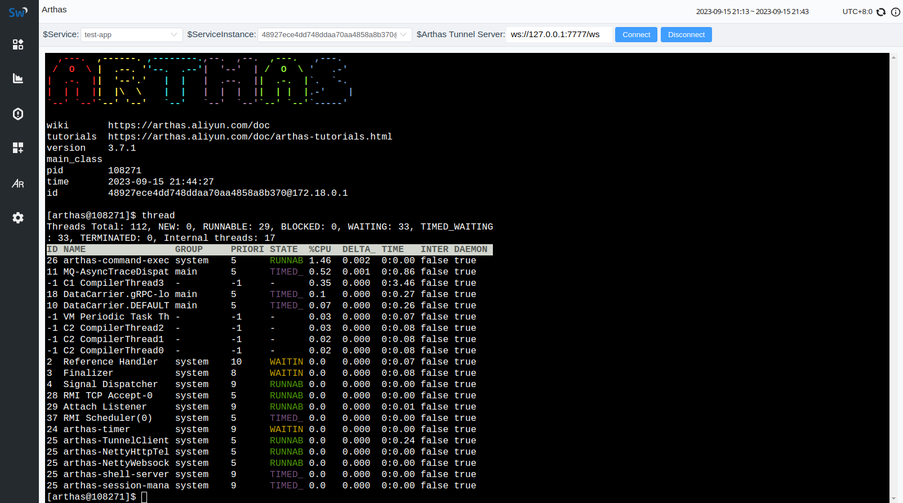
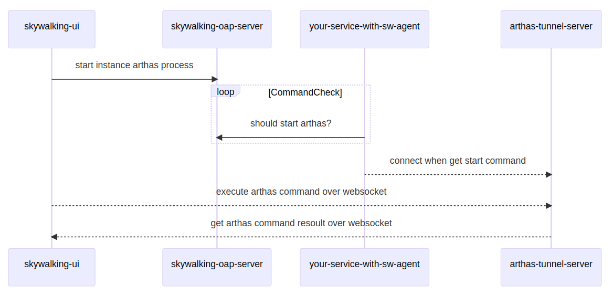
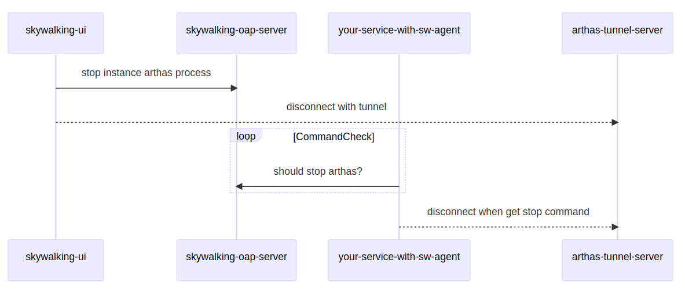

将 Apache SkyWalking 与 Arthas 集成
背景介绍
Arthas 是一款常用的 Java 诊断工具，我们可以在 SkyWalking 监控到服务异常后，通过 Arthas 进一步分析和诊断以快速定位问题。
在 Arthas 实际使用中，通常由开发人员拷贝或者下载安装包到服务对应的VM或者容器中，attach 到对应的 Java 进程进行问题排查。这一过程不可避免的会造成服务器敏感运维信息的扩散， 而且在分秒必争的问题排查过程中，这些繁琐的操作无疑会浪费大量时间。
SkyWalking Java Agent 伴随 Java 服务一起启动，并定期上报服务、实例信息给OAP Server。我们可以借助 SkyWalking Java Agent 的插件化能力，开发一个 Arthas 控制插件， 由该插件管理 Arthas 运行生命周期，通过页面化的方式，完成Arthas的启动与停止。最终实现效果可以参考下图：

要完成上述功能，我们需要实现以下几个关键点：
- 开发 agent arthas-control-plugin，执行 arthas 的启动与停止命令
- 开发 oap arthas-controller-module ，下发控制命令给 arthas agent plugin
- 定制 skywalking-ui, 连接 arthas-tunnel-server，发送 arthas 命令并获取执行结果
以上各个模块之间的交互流程如下图所示：
connect

disconnect

本文涉及的所有代码均已发布在 github skywalking-x-arthas 上，如有需要，大家可以自行下载代码测试。 文章后半部分将主要介绍代码逻辑及其中包含的SkyWalking扩展点。
agent arthas-control-plugin
首先在 skywalking-java/apm-sniffer/apm-sdk-plugin 下创建一个 arthas-control-plugin， 该模块在打包后会成为 skywalking-agent/plugins 下的一个插件， 其目录结构如下：
arthas-control-plugin/
├── pom.xml
└── src
└── main
├── java
│ └── org
│ └── apache
│ └── skywalking
│ └── apm
│ └── plugin
│ └── arthas
│ ├── config
│ │ └── ArthasConfig.java # 模块配置
│ ├── service
│ │ └── CommandListener.java # boot service，监听 oap command
│ └── util
│ ├── ArthasCtl.java # 控制 arthas 的启动与停止
│ └── ProcessUtils.java
├── proto
│ └── ArthasCommandService.proto # 与oap server通信的 grpc 协议定义
└── resources
└── META-INF
└── services # boot service spi service
└── org.apache.skywalking.apm.agent.core.boot.BootService
16 directories, 7 files
在 ArthasConfig.java 中，我们定义了以下配置，这些参数将在 arthas 启动时传递。
以下的配置可以通过 agent.config 文件、system prop、env variable指定。 关于 skywalking-agent 配置的初始化的具体流程，大家可以参考 SnifferConfigInitializer 。
public class ArthasConfig {
public static class Plugin {
@PluginConfig(root = ArthasConfig.class)
public static class Arthas {
// arthas 目录
public static String ARTHAS_HOME;
// arthas 启动时连接的tunnel server
public static String TUNNEL_SERVER;
// arthas 会话超时时间
public static Long SESSION_TIMEOUT;
// 禁用的 arthas command
public static String DISABLED_COMMANDS;
}
}
}
接着，我们看下 CommandListener.java 的实现，CommandListener 实现了 BootService 接口， 并通过 resources/META-INF/services 下的文件暴露给 ServiceLoader。
BootService 的定义如下，共有prepare()、boot()、onComplete()、shutdown()几个方法，这几个方法分别对应插件生命周期的不同阶段。
public interface BootService {
void prepare() throws Throwable;
void boot() throws Throwable;
void onComplete() throws Throwable;
void shutdown() throws Throwable;
default int priority() {
return 0;
}
}
在 ServiceManager 类的 boot() 方法中， 定义了BootService 的 load 与启动流程，该方法 由SkyWalkingAgent 的 premain 调用，在主程序运行前完成初始化与启动：
public enum ServiceManager {
INSTANCE;
...
...
public void boot() {
bootedServices = loadAllServices();
prepare();
startup();
onComplete();
}
...
...
}
回到我们 CommandListener 的 boot 方法，该方法在 agent 启动之初定义了一个定时任务，这个定时任务会轮询 oap ，查询是否需要启动或者停止arthas:
public class CommandListener implements BootService, GRPCChannelListener {
...
...
@Override
public void boot() throws Throwable {
getCommandFuture = Executors.newSingleThreadScheduledExecutor(
new DefaultNamedThreadFactory("CommandListener")
).scheduleWithFixedDelay(
new RunnableWithExceptionProtection(
this::getCommand,
t -> LOGGER.error("get arthas command error.", t)
), 0, 2, TimeUnit.SECONDS
);
}
...
...
}
getCommand方法中定义了start、stop的处理逻辑，分别对应页面上的 connect 和 disconnect 操作。 这两个 command 有分别转给 ArthasCtl 的 startArthas 和 stopArthas 两个方法处理，用来控制 arthas 的启停。
在 startArthas 方法中，启动arthas-core.jar 并使用 skywalking-agent 的 serviceName 和 instanceName 注册连接至配置文件中指定的arthas-tunnel-server。
ArthasCtl 逻辑参考自 Arthas 的 BootStrap.java ，由于不是本篇文章的重点，这里不再赘述，感兴趣的小伙伴可以自行查看。
switch (commandResponse.getCommand()) {
case START:
if (alreadyAttached()) {
LOGGER.warn("arthas already attached, no need start again");
return;
}
try {
arthasTelnetPort = SocketUtils.findAvailableTcpPort();
ArthasCtl.startArthas(PidUtils.currentLongPid(), arthasTelnetPort);
} catch (Exception e) {
LOGGER.info("error when start arthas", e);
}
break;
case STOP:
if (!alreadyAttached()) {
LOGGER.warn("no arthas attached, no need to stop");
return;
}
try {
ArthasCtl.stopArthas(arthasTelnetPort);
arthasTelnetPort = null;
} catch (Exception e) {
LOGGER.info("error when stop arthas", e);
}
break;
}
看完 arthas 的启动与停止控制逻辑，我们回到 CommandListener 的 statusChanged 方法， 由于要和 oap 通信，这里我们按照惯例监听 grpc channel 的状态，只有状态正常时才会执行上面的getCommand轮询。
public class CommandListener implements BootService, GRPCChannelListener {
...
...
@Override
public void statusChanged(final GRPCChannelStatus status) {
if (GRPCChannelStatus.CONNECTED.equals(status)) {
Object channel = ServiceManager.INSTANCE.findService(GRPCChannelManager.class).getChannel();
// DO NOT REMOVE Channel CAST, or it will throw `incompatible types: org.apache.skywalking.apm.dependencies.io.grpc.Channel
// cannot be converted to io.grpc.Channel` exception when compile due to agent core's shade of grpc dependencies.
commandServiceBlockingStub = ArthasCommandServiceGrpc.newBlockingStub((Channel) channel);
} else {
commandServiceBlockingStub = null;
}
this.status = status;
}
...
...
}
上面的代码，细心的小伙伴可能会发现，getChannel() 的返回值被向上转型成了 Object, 而在下面的 newBlockingStub 方法中，又强制转成了 Channel。
看似有点多此一举，其实不然，我们将这里的转型去掉,尝试编译就会收到下面的错误：
[ERROR] Failed to execute goal org.apache.maven.plugins:maven-compiler-plugin:3.10.1:compile (default-compile) on project arthas-control-plugin: Compilation failure
[ERROR] .../CommandListener.java:[59,103] 不兼容的类型: org.apache.skywalking.apm.dependencies.io.grpc.Channel无法转换为io.grpc.Channel
上面的错误提示 ServiceManager.INSTANCE.findService(GRPCChannelManager.class).getChannel() 的返回值类型是 org.apache.skywalking.apm.dependencies.io.grpc.Channel，无法被赋值给 io.grpc.Channel 引用。
我们查看GRPCChannelManager的getChannel()方法代码会发现，方法定义的返回值明明是 io.grpc.Channel，为什么编译时会报上面的错误？
其实这是skywalking-agent的一个小魔法，由于 agent-core 最终会被打包进 skywalking-agent.jar，启动时由系统类装载器（或者其他父级类装载器）直接装载， 为了防止所依赖的类库和被监控服务的类发生版本冲突，agent 核心代码在打包时使用了maven-shade-plugin, 该插件会在 maven package 阶段改变 grpc 依赖的包名， 我们在源代码里看到的是 io.grpc.Channel，其实在真正运行时已经被改成了 org.apache.skywalking.apm.dependencies.io.grpc.Channel，这便可解释上面编译报错的原因。
除了grpc以外，其他一些 well-known 的 dependency 也会进行 shade 操作，详情大家可以参考 apm-agent-core pom.xml ：
<plugin>
<artifactId>maven-shade-plugin</artifactId>
<executions>
<execution>
<phase>package</phase>
<goals>
<goal>shade</goal>
</goals>
<configuration>
...
...
<relocations>
<relocation>
<pattern>${shade.com.google.source}</pattern>
<shadedPattern>${shade.com.google.target}</shadedPattern>
</relocation>
<relocation>
<pattern>${shade.io.grpc.source}</pattern>
<shadedPattern>${shade.io.grpc.target}</shadedPattern>
</relocation>
<relocation>
<pattern>${shade.io.netty.source}</pattern>
<shadedPattern>${shade.io.netty.target}</shadedPattern>
</relocation>
<relocation>
<pattern>${shade.io.opencensus.source}</pattern>
<shadedPattern>${shade.io.opencensus.target}</shadedPattern>
</relocation>
<relocation>
<pattern>${shade.io.perfmark.source}</pattern>
<shadedPattern>${shade.io.perfmark.target}</shadedPattern>
</relocation>
<relocation>
<pattern>${shade.org.slf4j.source}</pattern>
<shadedPattern>${shade.org.slf4j.target}</shadedPattern>
</relocation>
</relocations>
...
...
</configuration>
</execution>
</executions>
</plugin>
除了上面的注意点以外，我们来看一下另一个场景，假设我们需要在 agent plugin 的 interceptor 中使用 plugin 中定义的 BootService 会发生什么？
我们回到 BootService 的加载逻辑，为了加载到 plugin 中定义的BootService，ServiceLoader 指定了类装载器为AgentClassLoader.getDefault()， （这行代码历史非常悠久，可以追溯到2018年：Allow use SkyWalking plugin to override service in Agent core. #1111 ）， 由此可见，plugin 中定义的 BootService 的 classloader 是 AgentClassLoader.getDefault()：
void load(List<BootService> allServices) {
for (final BootService bootService : ServiceLoader.load(BootService.class, AgentClassLoader.getDefault())) {
allServices.add(bootService);
}
}
再来看下 interceptor 的加载逻辑，InterceptorInstanceLoader.java 的 load 方法规定了如果父加载器相同，plugin 中的 interceptor 将使用一个新创建的 AgentClassLoader （在绝大部分简单场景中，plugin 的 interceptor 都由同一个 AgentClassLoader 加载）：
public static <T> T load(String className,
ClassLoader targetClassLoader) throws IllegalAccessException, InstantiationException, ClassNotFoundException, AgentPackageNotFoundException {
...
...
pluginLoader = EXTEND_PLUGIN_CLASSLOADERS.get(targetClassLoader);
if (pluginLoader == null) {
pluginLoader = new AgentClassLoader(targetClassLoader);
EXTEND_PLUGIN_CLASSLOADERS.put(targetClassLoader, pluginLoader);
}
...
...
}
按照类装载器的委派机制，interceptor 中如果用到了 BootService，也会由当前的类的装载器去装载。 所以 ServiceManager 中装载的 BootService 和 interceptor 装载的 BootService 并不是同一个 （一个 class 文件被不同的 classloader 装载了两次），如果在 interceptor 中 调用 BootService 方法，同样会发生 cast 异常。 由此可见，目前的实现并不支持我们在interceptor中直接调用 plugin 中 BootService 的方法，如果需要调用，只能将 BootService 放到 agent-core 中，由更高级别的类装载器优先装载。
这其实并不是 skywalking-agent 的问题，skywalking agent plugin 专注于自己的应用场景，只需要关注 trace、meter 以及默认 BootService 的覆盖就可以了。 只是我们如果有扩展 skywalking-agent 的需求，要对其类装载机制做到心中有数，否则可能会出现一些意想不到的问题。
oap arthas-controller-module
看完 agent-plugin 的实现，我们再来看看 oap 部分的修改，oap 同样是模块化的设计，我们可以很轻松的增加一个新的模块，在 /oap-server/ 目录下新建 arthas-controller 子模块：
arthas-controller/
├── pom.xml
└── src
└── main
├── java
│ └── org
│ └── apache
│ └── skywalking
│ └── oap
│ └── arthas
│ ├── ArthasControllerModule.java # 模块定义
│ ├── ArthasControllerProvider.java # 模块逻辑实现者
│ ├── CommandQueue.java
│ └── handler
│ ├── CommandGrpcHandler.java # grpc handler,供 plugin 通信使用
│ └── CommandRestHandler.java # http handler,供 skywalking-ui 通信使用
├── proto
│ └── ArthasCommandService.proto
└── resources
└── META-INF
└── services # 模块及模块实现的 spi service
├── org.apache.skywalking.oap.server.library.module.ModuleDefine
└── org.apache.skywalking.oap.server.library.module.ModuleProvider
模块的定义非常简单，只包含一个模块名，由于我们新增的模块并不需要暴露service给其他模块调用，services 我们返回一个空数组
public class ArthasControllerModule extends ModuleDefine {
public static final String NAME = "arthas-controller";
public ArthasControllerModule() {
super(NAME);
}
@Override
public Class<?>[] services() {
return new Class[0];
}
}
接着是模块实现者，实现者取名为 default，module 指定该 provider 所属模块，由于没有模块的自定义配置，newConfigCreator 我们返回null即可。 start 方法分别向 CoreModule 的 grpc 服务和 http 服务注册了两个 handler，grpc 服务和 http 服务就是我们熟知的 11800 和 12800 端口：
public class ArthasControllerProvider extends ModuleProvider {
@Override
public String name() {
return "default";
}
@Override
public Class<? extends ModuleDefine> module() {
return ArthasControllerModule.class;
}
@Override
public ConfigCreator<?> newConfigCreator() {
return null;
}
@Override
public void prepare() throws ServiceNotProvidedException {
}
@Override
public void start() throws ServiceNotProvidedException, ModuleStartException {
// grpc service for agent
GRPCHandlerRegister grpcService = getManager().find(CoreModule.NAME)
.provider()
.getService(GRPCHandlerRegister.class);
grpcService.addHandler(
new CommandGrpcHandler()
);
// rest service for ui
HTTPHandlerRegister restService = getManager().find(CoreModule.NAME)
.provider()
.getService(HTTPHandlerRegister.class);
restService.addHandler(
new CommandRestHandler(),
Collections.singletonList(HttpMethod.POST)
);
}
@Override
public void notifyAfterCompleted() throws ServiceNotProvidedException {
}
@Override
public String[] requiredModules() {
return new String[0];
}
}
最后在配置文件中注册本模块及模块实现者，下面的配置表示 arthas-controller 这个 module 由 default provider 提供实现：
arthas-controller:
selector: default
default:
CommandGrpcHandler 和 CommandHttpHandler 的逻辑非常简单，CommandHttpHandler 定义了 connect 和 disconnect 接口， 收到请求后会放到一个 Queue 中供 CommandGrpcHandler 消费，Queue 的实现如下，这里不再赘述：
public class CommandQueue {
private static final Map<String, Command> COMMANDS = new ConcurrentHashMap<>();
// produce by connect、disconnect
public static void produceCommand(String serviceName, String instanceName, Command command) {
COMMANDS.put(serviceName + instanceName, command);
}
// consume by agent getCommand task
public static Optional<Command> consumeCommand(String serviceName, String instanceName) {
return Optional.ofNullable(COMMANDS.remove(serviceName + instanceName));
}
}
skywalking-ui arthas console
完成了 agent 和 oap 的开发，我们再看下 ui 部分：
- connect：调用oap server connect 接口，并连接 arthas-tunnel-server
- disconnect：调用oap server disconnect 接口，并与 arthas-tunnel-server 断开连接
- arthas 命令交互，这部分代码主要参考 arthas，大家可以查看 web-ui console 的实现
修改完skywalking-ui的代码后，我们可以直接通过 npm run dev 测试了。
如果需要通过主项目打包，别忘了在apm-webapp 的 ApplicationStartUp.java 类中添加一条 arthas 的路由：
Server
.builder()
.port(port, SessionProtocol.HTTP)
.service("/arthas", oap)
.service("/graphql", oap)
.service("/internal/l7check", HealthCheckService.of())
.service("/zipkin/config.json", zipkin)
.serviceUnder("/zipkin/api", zipkin)
.serviceUnder("/zipkin",
FileService.of(
ApplicationStartUp.class.getClassLoader(),
"/zipkin-lens")
.orElse(zipkinIndexPage))
.serviceUnder("/",
FileService.of(
ApplicationStartUp.class.getClassLoader(),
"/public")
.orElse(indexPage))
.build()
.start()
.join();
总结
- BootService 启动及停止流程
- 如何利用 BootService 实现自定义逻辑
- Agent Plugin 的类装载机制
- maven-shade-plugin 的使用与注意点
- 如何利用 ModuleDefine 与 ModuleProvider 定义新的模块
- 如何向 GRPC、HTTP Service 添加新的 handler
如果你还有任何的疑问，欢迎大家与我交流 。